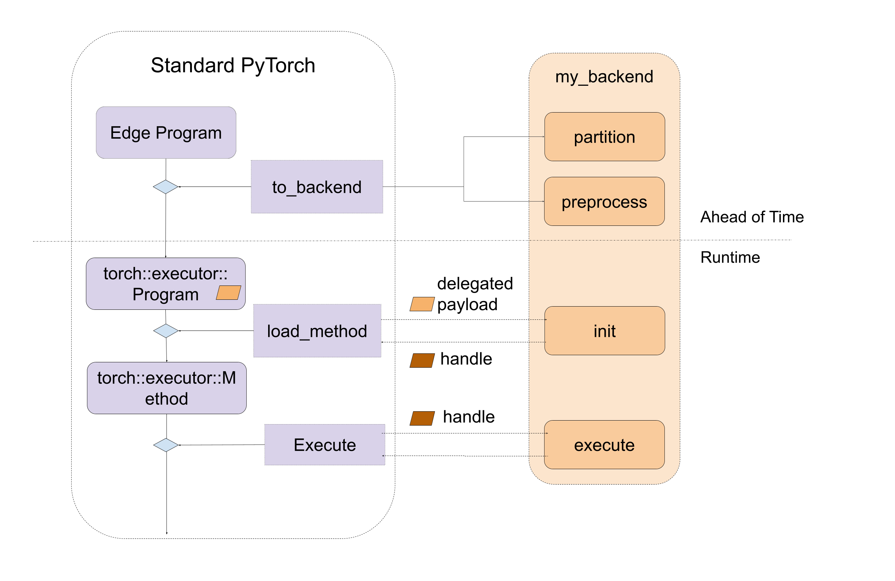
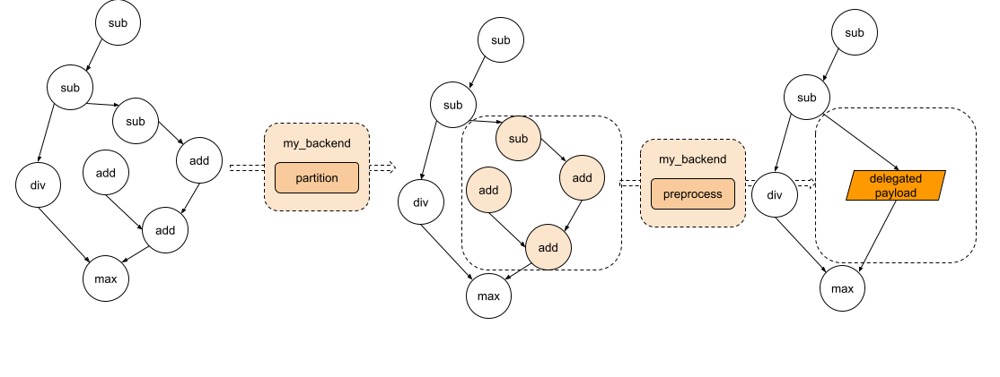
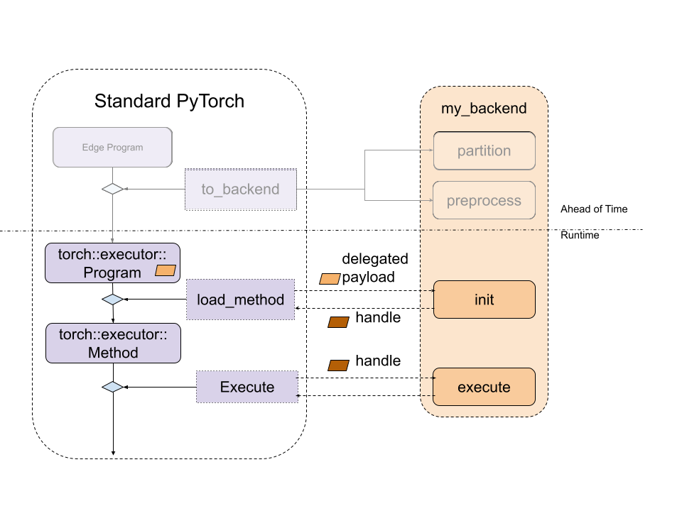
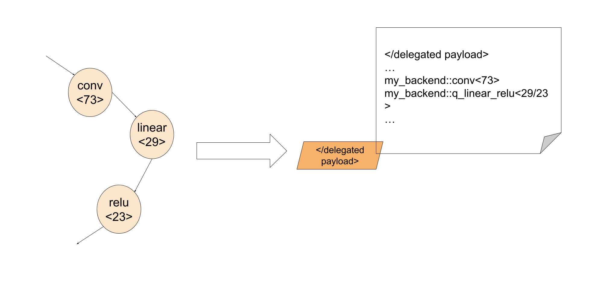
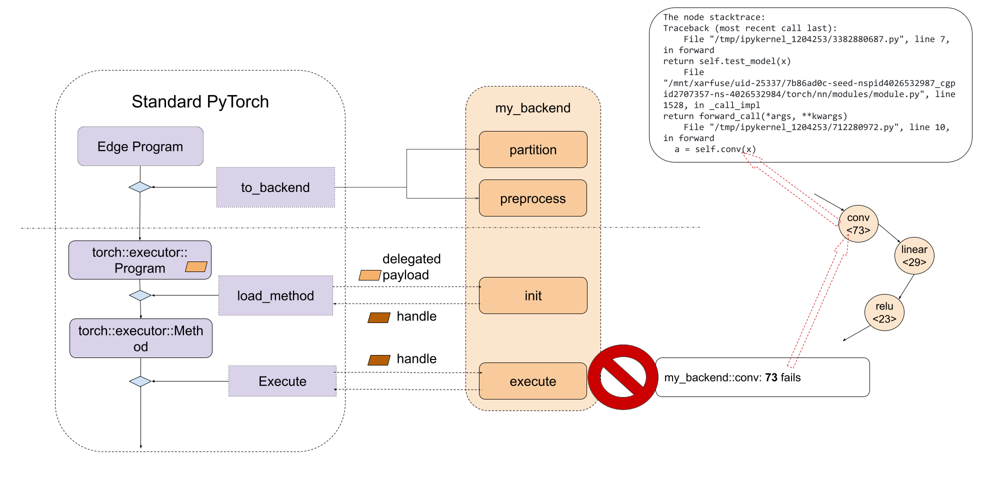

Understanding Backends and Delegates#
Audience: Vendors, Backend Delegate developers, who are interested in integrating their own compilers and hardware as part of ExecuTorch
Backend delegation is an entry point for backends to process and execute PyTorch programs to leverage performance and efficiency benefits of specialized backends and hardware, while still providing PyTorch users with an experience close to that of the PyTorch runtime.
Backend Interfaces: Overview#
At a high level, the entry point for backends is defined by 2 components:
An IR to represent the program: Edge Dialect (which is produced through the
to_edgeAPI)A couple of interfaces for backends to implement:
Ahead-of-Time (AOT)
Program preprocessing (e.g. ahead of time compilation, transformation, optimization…).
Runtime
Program initialization (e.g. runtime compilation).
Program execution.
(optional) Program destroy (e.g. release backend owned resource).
A delegate backend implementation is composed of:
An ahead-of-time preprocessing interface
A runtime initialization and execution interface
The diagram looks like following
Figure 1. A high level of entry points for backend interfaces, including both ahead-of-time and runtime.
Backend Interfaces: Ahead-of-Time Preprocessing#
There are mainly two Ahead-of-Time entry point for backend to implement: partition and preprocess.
partitioner is an algorithm implemented by the backend to tag the nodes to be lowered to the backend. to_backend API will apply the partition algorithm and lower each subgraph, which consists of connected tagged nodes, to the targeted backend. Every subgraph
will be sent to the preprocess part provided by the backend to compiled as a binary blob.
During partition, the exported_program is not allowed to mutate the program, and it’s supposed to apply tag to each node. The
PartitionResult includes both tagged exported program and the partition tags dictionary for to_backend to look up the tag and
link to the backend_id and compile_spec
def partition(
exported_program: ExportedProgram,
) -> PartitionResult:
During preprocessing, backends are given an edge dialect program,
a list of compile specs specifying the values needed for compilation, and are
expected to return a compiled blob, or binary containing the desired program to be
run in the backend. During serialization, the
compiled blob will be serialized as part of the .pte file, and directly loaded to the device. The
API for this process is:
def preprocess(
edge_program: ExportedProgram,
compile_specs: List[CompileSpec],
) -> PreprocessResult:
A demo of the preprocess function is implemented
here.
The demo loops through the nodes in the graph module of the edge_program and
serializes the add, mul, and sin instructions into a string, which is later
parsed and executed at runtime.
The diagram looks like following
Figure 2. The graph goes through partition and each subgraph will be sent to the preprocess part.
Backend Interfaces: Runtime Initialization and Execution#
During the runtime, the compiled blob from the preprocess function will be
loaded and passed directly to the backend’s custom init function. This
function is responsible for further processing the compiled unit, as well as
perform any backend initialization. The backend’s custom execute function will
then be called to execute the handle produced by init. And finally, if
destroying is required for some backend, backends can implement a destroy
function which will be called when the program is out of its lifespan.
// Runtime check
ET_NODISCARD bool is_available();
// Runtime initialization
ET_NODISCARD virtual Result<DelegateHandle*> init(
BackendInitContext& context,
FreeableBuffer* processed,
ArrayRef<CompileSpec> compile_specs);
// Runtime execution
ET_NODISCARD virtual Error execute(
BackendExecutionContext& context,
DelegateHandle* handle,
Span<EValue*> args);
// [optional] Runtime destroy. Destroy the resource held by the backend
virtual void destroy(ET_UNUSED DelegateHandle* handle);
The diagram looks like following
Figure 3. The relationship between standard ExecuTorch Runtime and backend entry point.
In order to make backend available to ExecuTorch runtime, it must be registered via the register_backend API:
ET_NODISCARD Error register_backend(const Backend& backend);
Static registeration, i.e., at libraray init or load time, of a backend can be achieved as follows:
namespace {
auto cls = BackendWithCompiler();
Backend backend{"BackendWithCompilerDemo", &cls};
static auto success_with_compiler = register_backend(backend);
} // namespace
Developer Tools Integration: Debuggability#
Providing consistent debugging experience, be it for runtime failures or performance profiling, is important. ExecuTorch employs native Developer Tools for this purpose, which enables correlating program instructions to original PyTorch code, via debug handles. You can read more about it here.
Delegated program or subgraphs are opaque to ExecuTorch runtime and appear as a special call_delegate instruction, which asks corresponding backend to handle the execution of the subgraph or program. Due to the opaque nature of backend delgates, native Developer Tools does not have visibility into delegated program. Thus the debugging, functional or performance, experiences of delegated execution suffers significantly as compared to it’s non-delegated counterpart.
In order to provide consistent debugging experience to users, regardless of the use of delegation for a model, Developer Tools provide an interface to correlate delegated (sub)graph to original (sub)graph. The Developer Tools do so via debug handles map which allows delegates to generate internal handles that can be associated with the original (sub)graph consumed by the delegate. Then at runtime, backend developer can report error or profiling information using the internal handle, which will be mapped to original (sub)graph using the debug handle map. For more information, please refer to Delegate Debugging.
By leveraging the debug identifier, backend developer can embed the debug as part of the delegated blob
In this way, during execute stage, with the debug identifier, backend developer can associate the failed instruction inside the delegate back to the exact line of PyThon code.
Common Questions#
1. How can we get data in backend.preprocess?
The graph module being preprocessed is a lifted graph, this means that static
data like weights and biases are supplied as inputs to the graph. However, we
can access the weights and biases ahead-of-time through the exported program. To
access these parameters from a given node, we can use the function get_params
provided in torch/_export/utils.py
2. How can we embed the data (like weight/bias) to the backend?
It’s common that backends have some ways to optimize the const data. In this case, we’d need to tag the placeholder nodes which are also the state in the partitioner, and during backend.preprocess, we can follow the description in the first question to get the weight.
3. How can we run the lowered module in Python with the specific backend?
We haven’t added the support yet but that’s the plan!
4. Should we expect to see get_attr nodes in the edge dialect program?
get_attr nodes will only show up for submodules used for control flow or
delegation. It won’t hold any data.
5. Can we delegate to multiple backends?
Yes! There are two ways to do this:
Option 1: Run to_backend multiple times for different backends
If we have two backends, backend_1 and backend_2, and they have their own parititioners: backend_1_parititioner and backend_2_partitioner, we can run it like:
# Will first lower nodes to backend_1 depending on the backend_1_parititioner depending on partitioner algorithm
exported_program_backend_1 = to_backend(exported_program, backend_1_parititioner())
# For the rest of nodes, they will be lowered to backend_2 depending on backend_2_parititioner
exported_program_backend_1_and_2 = to_backend(exported_program_backend_1, backend_2_parititioner())
A more concrete example be found here. In this example, qnnpack is one backend and xnnpack is another backend. We haven’t open-sourced these two backends delegates yet, and this example won’t run out of box. It can be used as a reference to see how it can be done.
This option is easy to try becuase usually all backends will implement their own parititioner. However this option may get different results if we change the order of to_backend call. If we want to have a better control on the nodes, like which backend they should go, option 2 is better.
Option 2: Have a partitioner which partitions for different backends
Another option is to create a customized partitioner, say partitioner
backend_1_2_partitioner, and inside the partitioner logic,
class Backend_1_2_Partitioner(Partitioner):
"""
Partitions all add/mul nodes regardless of order for Backend2
"""
def __init__(self) -> None:
self.delegation_spec_1 = DelegationSpec("Backend1", [])
self.delegation_spec_2 = DelegationSpec("Backend2", [])
self.partition_tags = {}
def partition(
self, exported_program: ExportedProgram
) -> ExportedProgram:
# Tag all nodes in the first partiton to backend 1
node_to_backend_1 = ... # some logic to select the nodes from the graph
delegation_tag = f"backend2_tag{partitioner_1.id}"
node.meta["delegation_tag"] = delegation_tag
self.partition_tags[delegation_tag] = self.delegation_spec_1
# Tag all nodes in the first partiton to backend 2
node_to_backend_2 = ... # some logic to select the nodes from the graph
delegation_tag = f"backend2_tag{partitioner_2.id}"
node.meta["delegation_tag"] = delegation_tag
self.partition_tags[delegation_tag] = self.delegation_spec_2
return exported_program
6. Is there an easy way to write a partitioner?
We provide some helper partitioners here to make it easy to find nodes from decomposed operators.
7. How do we link the node back to the source code? We provide an helper function
from executorch.exir.print_program import inspect_node
print(inspect_node(graph, node))
And it will highlight the node in the graph as well as point to the source code, example output will be like following:
_param_constant1 error_msg: Here is the node in the graph module:
graph():
%arg0_1 : [num_users=1] = placeholder[target=arg0_1]
%_param_constant0 : [num_users=1] = get_attr[target=_param_constant0]
--> %_param_constant1 : [num_users=1] = get_attr[target=_param_constant1]
%aten_convolution_default : [num_users=2] = call_function[target=executorch.exir.dialects.edge._ops.aten.convolution.default](args = (%arg0_1, %_param_constant0, %_param_constant1, [1, 1], [0, 0], [1, 1], False, [0, 0], 1), kwargs = {})
%_param_constant2 : [num_users=1] = get_attr[target=_param_constant2]
%_param_constant3 : [num_users=1] = get_attr[target=_param_constant3]
%aten_convolution_default_1 : [num_users=1] = call_function[target=executorch.exir.dialects.edge._ops.aten.convolution.default](args = (%aten_convolution_default, %_param_constant2, %_param_constant3, [1, 1], [0, 0], [1, 1], False, [0, 0], 1), kwargs = {})
%aten_add_tensor : [num_users=1] = call_function[target=executorch.exir.dialects.edge._ops.aten.add.Tensor](args = (%aten_convolution_default, %aten_convolution_default_1), kwargs = {})
%_param_constant4 : [num_users=1] = get_attr[target=_param_constant4]
%_param_constant5 : [num_users=1] = get_attr[target=_param_constant5]
%aten_convolution_default_2 : [num_users=1] = call_function[target=executorch.exir.dialects.edge._ops.aten.convolution.default](args = (%aten_add_tensor, %_param_constant4, %_param_constant5, [1, 1], [0, 0], [1, 1], False, [0, 0], 1), kwargs = {})
%aten_gelu_default : [num_users=1] = call_function[target=executorch.exir.dialects.edge._ops.aten.gelu.default](args = (%aten_convolution_default_2,), kwargs = {})
return [aten_gelu_default]
This node _param_constant1 has metadata of:
The node stacktrace:
Traceback (most recent call last):
File "/tmp/ipykernel_1204253/3382880687.py", line 7, in forward
return self.test_model(x)
File "/mnt/xarfuse/uid-25337/7b86ad0c-seed-nspid4026532987_cgpid2707357-ns-4026532984/torch/nn/modules/module.py", line 1528, in _call_impl
return forward_call(*args, **kwargs)
File "/tmp/ipykernel_1204253/712280972.py", line 10, in forward
a = self.conv1(x)